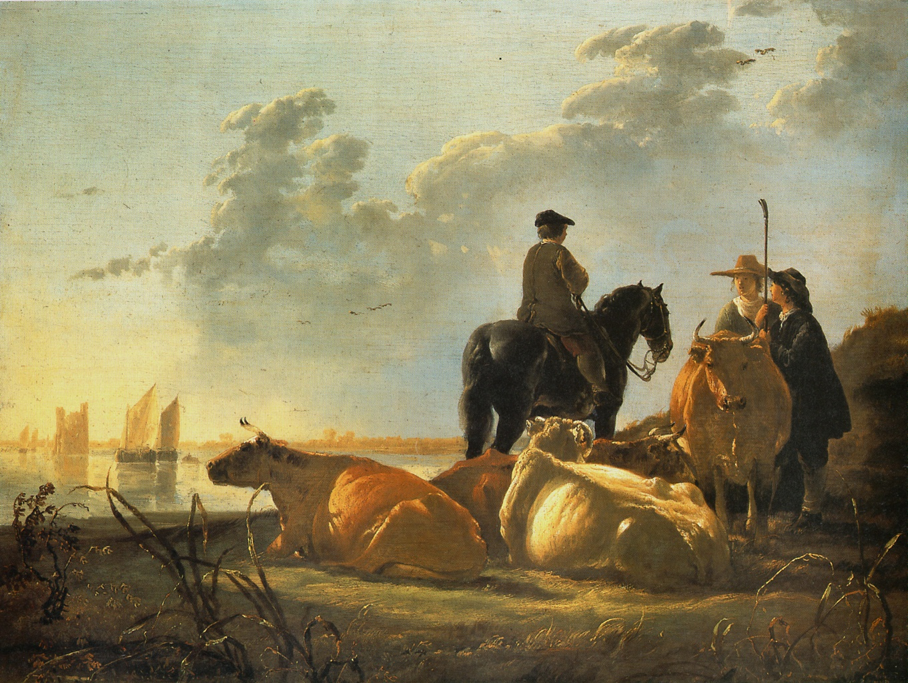

Мирная сельская сцена купается
в золотом зареве заката. Теплый
свет пронизывает каждую деталь
композиции, создавая эффект
свечения. Это разительно
отличает колорит Кейпа от
холодных голубых и зеленых тонов
его современников, таких как
Мейндерт Хоббема. Кажущаяся
случайность расположения
животных в действительности
внимательно обдумана с тем,
чтобы показать игру света и тени.
Кейп считается одним из наиболее
значительных голландских
пейзажистов; в
пристальном изучении природы он
следовал Якобу ван Рейсдалю и
Яну ван Гойену. Особенно
восхищают его речные и городские
виды, которые художник писал,
главным образом, в окрестностях
и непосредственно в городе, в
своем родном Дордрехте.
Первыми оценили и стали покупать
пейзажи Кейпа английские
коллекционеры в конце XVIII века. С
тех пор его творчество оказывало
непрестанное воздействие на
английское искусство.